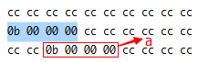

Constructs a closure: an unnamed function object capable of capturing variables in scope.
—— Lambda functions (since C++11) [cppreference.com]
按照C++11标准的说法，lambda表达式的标准格式如下：
1 | [ capture ] ( params ) mutable exception attribute -> ret { body } |
capture - 指定哪些在函数声明处的作用域中可见的符号将在函数体内可见。
符号表可按如下规则传入：
[a,&b]，按值捕获a，并按引用捕获b
[this]，按值捕获了this指针
[&] 按引用捕获在lambda表达式所在函数的函数体中提及的全部自动储存持续性变量
[=] 按值捕获在lambda表达式所在函数的函数体中提及的全部自动储存持续性变量
[] 什么也没有捕获
params - 参数列表，与命名函数一样
ret - 返回值类型。如果不存在，它由该函数的return语句来隐式决定（或者是void，例如当它不返回任何值的时候）
body - 函数体
下面，我将从最简单的形式开始逐步对各种形式的lambda表达式进行汇编分析。
首先是最简单的类型（4）：
和普通表达式一样，若单纯的一个表达式将被编译器忽略，这里将lambda表达式赋值给一个栈变量进行分析。
1 | int main() |
IntelliSense显示这里的lambda变量其实是一个 void lambda()，编译后被解析是main::__l3::void
1 | ...省略... |
若使用sizeof(lambda)计算其所占字节数将得到1，稍微在main代码上面一点，可以发现[]{}是作为一个函数被编译：
1 | push ebp |
可见，就像普通函数一样，[]{}表达式内部被编译为一个函数，该函数内有一个this指针作为栈变量，它指向调用函数时的寄存器ecx。
下面我们执行这个lambda表达式，进入闭包内部分析，同时，为了好说明，在函数内增加一条赋值语句。
1 | int main() |
对应有汇编代码：
1 | auto lambda = []{ |
可以看到，有一个地址传送，[ebp-5]的地址送给ecx，然后直接调用闭包函数。
[ebp-5]是main的一个栈变量，占用4字节，他的值没有被初始化，debug版本默认是(0xcccccccc)。
将其地址&[ebp-5]送入ecx究竟有什么含义，不妨先进入闭包函数内部看看：
1 | push ebp |
可见，刚才的ecx被push保存，然后又在函数初始化栈完成后(rep stos后)，被弹出并写入局部变量[ebp-8]中，而这个[ebp-8]其实就是上面说到的this指针。也就是说，这个this指针指向main中的一个局部变量。
那么，为了进一步研究这个机制，我们设法让这个闭包使用this。不妨猜想一下，this既然是指向main里面的变量，那么他可能是一个base address用来“捕获”（lambda中的概念）闭包外层作用域内的某些变量。“捕获”方式在上面有说到，若将上面的[]改为[=]，让lambda按值捕获main中的int变量s，再看看有什么变化：
1 | int main() |
闭包内对应汇编代码：
1 | pop ecx |
同样的，先放置this指针，然后下面比较关键：
- 把this临时放到eax
- 然后再取eax地址对应的值放到临时ecx寄存器中，这里就是a
- 然后赋值给[ebp-14h]就是s
那么绕了半天做了什么事，其实就是相当于下面的代码：
s = *this;
那么这个this确实是指向了main里面的a，如何办到的？
查看main栈内存发现，传给闭包的this是指向下图中选中部分，而红框中是变量a：

可见，a在main的栈空间被复制了一次，而不是闭包的栈空间，那么复制发生在哪个时候，为什么this恰好就指向了a的副本？
再调用闭包函数之前，还做了一些事情：
1 | int a = 0xB; |
发现还call了一个带参函数：
- 将a的地址送入eax并压栈，相当于给下面的函数传参&a
- 将给后面闭包用的this保存在ecx中，可能会给下面的一个call使用
上面的操作相当于下面的伪代码：
call 010E1BE0(&a , this); //当然，this并不是作为参数传入的，这里只是方便理解
可以预见，010E1BE0函数的作用应该是拷贝a，并让this指向a，空口无凭，进去看看：
1 | push ebp |
前后的代码按部就班，主要是中间：
- ecx是this不用说了。
- 先把this保存到该函数的栈空间再说
- this放进eax，预见下面的[eax]就是*this，和上面说到的一样
- 然后是[ebp+8]这块，送给ecx临时保存，然后取值，送入edx临时保存，可见[ebp+8]里面应该是一个地址
- edx送给*this
- 最后那个mov eax，[ebp-8] ，又把this作为返回值
关于[ebp+8]：还记得传入该函数的参数&a吗？没错，[ebp+8]保存的是就是&a。
简单翻译一下这个函数的意思：
1 | fun(&a,this); |
注意这里的this传递其实是通过寄存器的方式。
好了，说了半天，刚才那个问题，差不多也知道答案了。
调用闭包函数前，“捕获者”this指针被放在main中，并对其指向的内存块拷贝闭包中要用到的变量值，调用时，this通过寄存器送入闭包中，闭包通过this访问外层作用域(这里是main)的已捕获对象(这里是a)。
可见，如果闭包要按值捕获main中多个变量，那么事先要调用一个复制函数，依次复制所有要用的变量，然后通过this寻址访问main中变量的副本，而不是把所有变量拷贝到闭包的栈空间内。
上面说的都是最简单的形式，也即：[=]{ }，之后的文章将分析更复杂的lambda表达式。今天先说到这。
C++11新特性中的匿名函数Lambda表达式的汇编实现分析（二）参考资料：